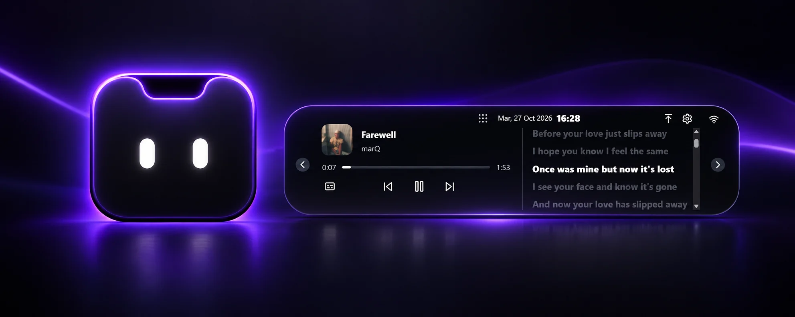
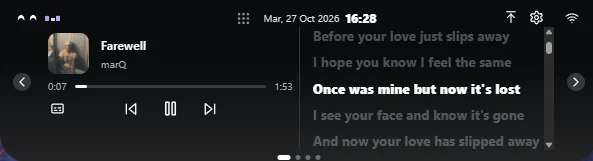

Tu música, a mano
Reproducí, pausá y cambiá canciones mientras seguís las letras sincronizadas.
✦ HECHO PARA WINDOWS
Tu música, tus archivos y todo lo que necesitás, siempre a mano. Bimu vive en tu pantalla y aparece cuando lo necesitás.
Windows · Instalador disponible en GitHub

UN ESPACIO QUE SE ADAPTA A VOS
Bimu se integra al borde superior de tu pantalla. Acercá el cursor para descubrir tus herramientas y seguí con lo que estabas haciendo.

MÚSICA SIN INTERRUPCIONES
Controlá tu música, mirá la portada y seguí las letras sincronizadas desde un mismo lugar. También podés ver la letra en la vista compacta.
♫ REPRODUCTOR + LETRASPEQUEÑO POR FUERA. ÚTIL POR DENTRO.
Una forma más simple de tener cerca las cosas que usás todos los días.
Reproducí, pausá y cambiá canciones mientras seguís las letras sincronizadas.
Creá modos para abrir tus aplicaciones, páginas y carpetas favoritas con un clic.
Arrastrá archivos y carpetas a Bimu para tenerlos a mano cuando los necesites.
Consultá el clima y el pronóstico de tu ubicación de forma rápida y clara.
Elegí el tema, el color, la transparencia y el tamaño que mejor se adapten a vos.
Reducilo a una pequeña solapa manualmente o cuando detecta contenido compatible que podría tapar.
LISTO PARA ACOMPAÑARTE
Una nueva forma de tener lo importante siempre cerca.
↓ Descargar para WindowsEn GitHub, elegí el archivo setup.exe de la última versión.